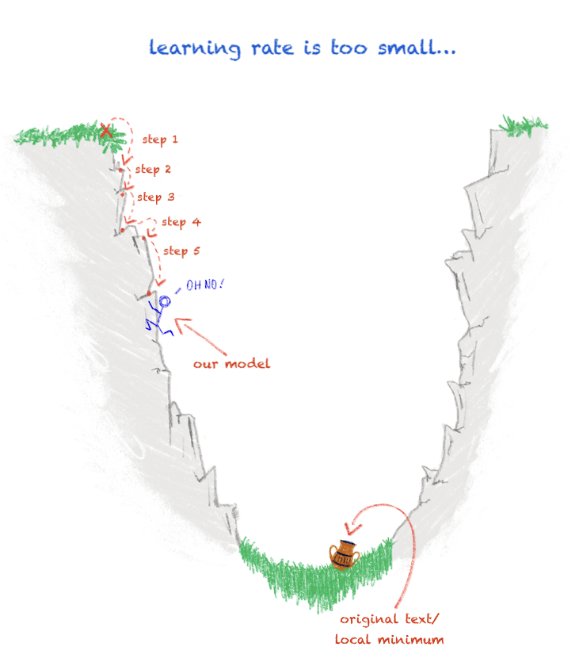

Neural Networks
CIS 241, Dr. Ladd
🧠🧠🧠
What is a Neural Network?
AKA Deep Learning, Neural Nets, Artifical Neurons
Jay Alammar’s Visual Guides
A Visual and Interactive Guide to the Basics of Neural Networks

Like in linear or logistic regression, neural nets optimize weights (coefficients) and bias (intercept).
Neural nets often use gradient descent.
(Instead of Ordinary Least Squares or other
methods.)

Chantal
Brousseau in Programming Historian
Neural nets have “hidden” layers.
These activation functions allow you to create nonlinear relationships and get more sophisticated predictions.
Neural nets are always trying to minimize the “loss function.”
I.e. we are trying to eliminate as much loss or error as possible. We can add nodes and layers to our network iteratively to do better at the task.
Neural nets can be supervised or unsupervised.
Neural nets are not brains!
Neural Networks in Python
We’ll focus on SKLearn for now.
MLPClassifier: Multi-Layer Perceptron
Other key libraries: TensorFlow and Keras
Using the MLPClassifier will be familiar.
- Same workflow as all other sklearn models.
- You must use one-hot encoding and you must scale your variables.
Which hyperparameters are important?
hidden_layer_sizes: number and size of hidden layersactivation: type of activation function to usesolver: solving method. ‘sgd’ and ‘adam’ are both stochastic gradient descent and useful for larger datasets. ‘lbfgs’ is better for small data.alpha: strength of regularization (helps with outliers)
Hyperparameters, continued
learning_rateandlearning_rate_init: for gradient descent only, determines the size of the stepsmax_iter: the number of iterations or epochs until the model convergesrandom_state
Cross-validation lets you compare multiple runs of the model with different training data.
scores = cross_val_score(neural_clf, X, y, cv=5)
print(f"{scores.mean():.2} accuracy with standard deviation {scores.std():.2}")You will need to standardize X first!
Quicker methods for validation measures and ROC Curve.
Try it with the Titanic dataset!
- Load dataset and choose predictors.
- Wrangle, split, and standardize data.
- Choose hyperparameters and train neural net.
- Validate using usual methods, but with new functions.
- Cross-validate model to see mean accuracy score.
Can you get a cross-validation accuracy above 80%?